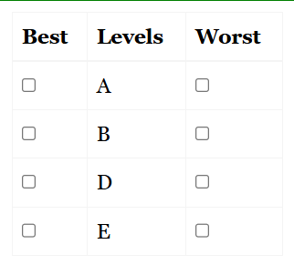

An object case is used to determine the relative ratings or ranks of a number of discrete objects. This is the simplest form of BWS, involving a survey where subsets of the objects are created and respondents are asked to select the ‘best’ and ‘worst’ items from each set.
If there are 5 items: A, B, C, D, and E, choice sets can be created with 4 items each. For example:
Example diagram of an object case choice set:

Respondents indicate the most and least preferred item in each set. This allows efficient comparison of all items across different combinations.